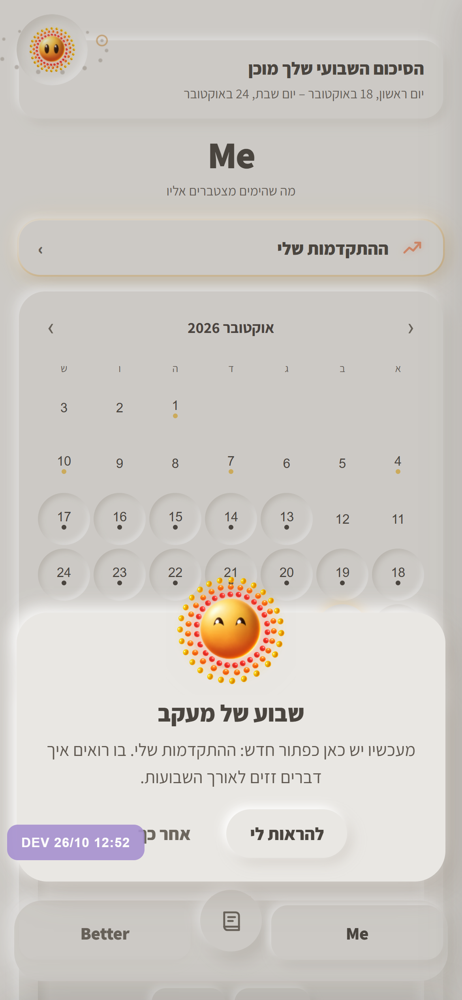
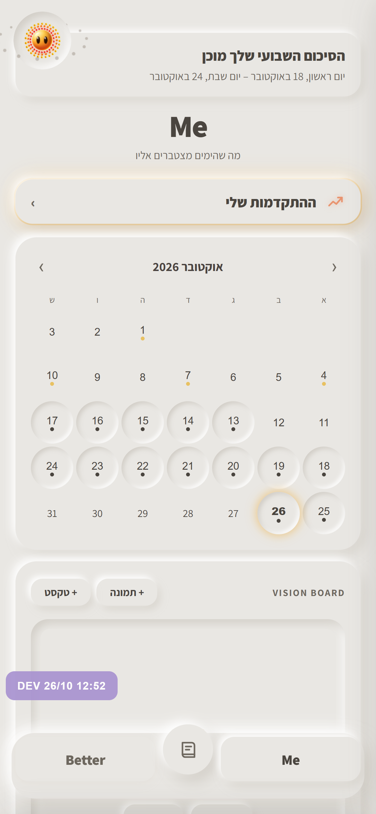
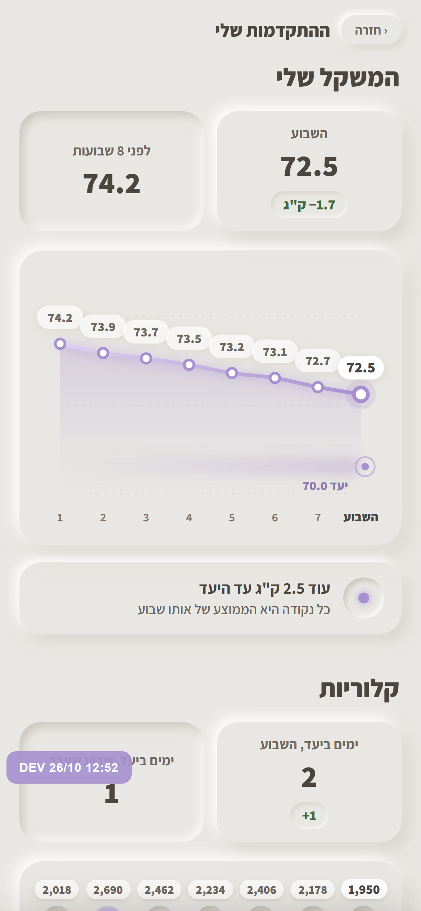

ההתקדמות שלי - אחרי שבוע של מעקב

1. בפעם הראשונה
- מיפ עולה מלמטה ומציג את הכפתור החדש.

2. הכפתור מואר
- זוהר ענברי עדין, עד שלוחצים עליו בפעם הראשונה.

3. ההתקדמות שלי
- הכל בגלילה אחת, כל מעקב נכנס משמאל.